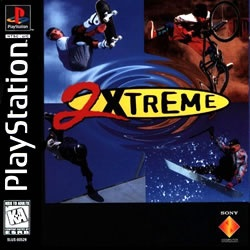
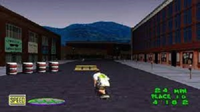

Radical, muito radical. Assim é a sequência de Extreme Games para o PlayStation, cheia de adrenalina, velocidade e muito perigoso. A novidade desta versão é o Snowboard, uma espécie de skate na neve, onde você desce uma montanha em alta velocidade. Os outros três esportes do jogo são: mountain bike, skate e patins in-line. Nesta versão existem quatro níveis de dificuldades diferentes e três trajetos para cada esporte. Competir em lugares como ruas dos Estados Unidos e até em montanhas geladas do Japão.
Vencer em Extreme 2 é pura questão de coragem. Quando mais arriscada forem as suas manobras, maiores serão suas chances de ganhar. Mas é claro que sempre pode dar um jeitinho de se sair melhor do que o outro... Na largada, por exemplo, não deixe nenhum adversário de pé usando os botões "L1" e "L2" para dar socos e empurrar os outros para o chão Pegue o máximo de velocidade que conseguir apertando "Botão Bolinha" seguidamente, mas preste atenção no gráfico de força no canto inferior esquerdo. Quando ele ficar vermelho, pare de apertar o botão. Depois mantenha o "Botão X" pressionado para obter maior velocidade, e fique atento aos obstáculos. Quando prescisar, aperte "Botão Quadrado" para pular. É claro que só isso não irá garantir sua vitória, é presciso fazer manobras radicais bastante arriscadas. Aproveite que é só videogame, e não é voce quem vai ficar com o corpo dolorido.
|  | |
Faça a sequencia de comndos a seguir em qualquer uma pistas disponíveis, e terá acesso a um trajeto especial. Para facilitar, vá no menu Options e desbilite seus oponentes. Na primeira rampa do circuito, aperte o "Botão Quadrado" e "Botão Triangulo". Aumente sua velocidade e faça uma manobra média (Botão Quadrado, Botão Bolinha, Botão Triangulo) na segunda rampa. Finalmente, faça uma manobra dificil ("Botão Quadrado, Botão x, Botão Triangulo, Botão Bolinha na terceira rampa e depois finalize o circuito. Uma pista bônus no Japão ficará disponivel.
Durante um salto, aperte a seguência de botões abaixo para realizar movimentos radicais e somar mais pontos.
Estes são os movimentos especiais que devem ser feitos durante os saltos e que são específicos de cada esporte